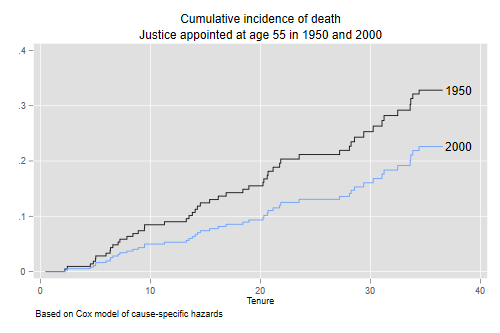
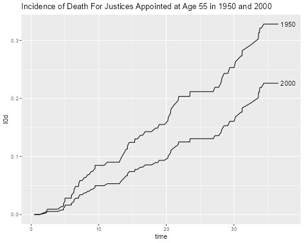

<h2 id="cox-models-of-competing-risks">Cox Models of Competing
Risks</h2>
<p>We continue our competing risk analysis of supreme court tenure by
introducing two covariates: <code>age</code>, how old the justice was
when appointed, and <code>year</code>, the calendar year of appointment.
We obviously expect survival to improve over time and decline with the
age of the justice at appointment, but it is not clear whether the trend
over time is to retire earlier or later.</p>
<p>We use the file created in the <a href="justices">previous step</a>,
which I have saved on this website.</p>

{% include srtabs.html %}

<pre class='stata'>. use https://grodri.github.io/datasets/justices2, clear
</pre>
<pre class='r'>> justices &lt;- read.csv("https://grodri.github.io/datasets/justices2.csv")
</pre>
<p>We can now run a Cox regression looking at overall tenure in the
court</p>
<pre class='stata'>. stset tenure, fail(event)

Survival-time data settings

         Failure event: event!=0 &amp; event&lt;.
Observed time interval: (0, tenure]
     Exit on or before: failure

──────────────────────────────────────────────────────────────────────────
        113  total observations
          0  exclusions
──────────────────────────────────────────────────────────────────────────
        113  observations remaining, representing
        104  failures in single-record/single-failure data
  1,887.365  total analysis time at risk and under observation
                                                At risk from t =         0
                                     Earliest observed entry t =         0
                                          Last observed exit t =  36.57221

. stcox age year, efron

        Failure _d: event
  Analysis time _t: tenure

Iteration 0:   log likelihood = -389.72292
Iteration 1:   log likelihood = -375.63169
Iteration 2:   log likelihood = -375.56405
Iteration 3:   log likelihood = -375.56403
Refining estimates:
Iteration 0:   log likelihood = -375.56403

Cox regression with Efron method for ties

No. of subjects =        113                            Number of obs =    113
No. of failures =        104
Time at risk    = 1,887.3648
                                                        LR chi2(2)    =  28.32
Log likelihood = -375.56403                             Prob > chi2   = 0.0000

─────────────┬────────────────────────────────────────────────────────────────
          _t │ Haz. ratio   Std. err.      z    P>|z|     [95% conf. interval]
─────────────┼────────────────────────────────────────────────────────────────
         age │   1.084647   .0187453     4.70   0.000     1.048522    1.122017
        year │   .9941362   .0017051    -3.43   0.001     .9907998    .9974839
─────────────┴────────────────────────────────────────────────────────────────
</pre>
<pre class='r'>> library(survival)
> coxb &lt;- coxph(Surv(tenure, event > 0) ~ age + year, data=justices)
> coef(summary(coxb))    
             coef exp(coef)    se(coef)         z     Pr(>|z|)
age   0.081254650 1.0846471 0.017282397  4.701585 2.581503e-06
year -0.005881029 0.9941362 0.001715201 -3.428770 6.063235e-04
</pre>
<p>We see that the risk of leaving the court at any length of service is
8.5% higher for every year of age at appointment, and just over half a
percent lower per calendar year. This, of course, confounds trends in
mortality with trends in retirement.</p>
<p>To look at the risk of death we use death as the event indicator,
treating everything else as censoring</p>
<pre class='stata'>. streset, fail(event == 1) // just death
-> stset tenure, failure(event==1)

Survival-time data settings

         Failure event: event==1
Observed time interval: (0, tenure]
     Exit on or before: failure

──────────────────────────────────────────────────────────────────────────
        113  total observations
          0  exclusions
──────────────────────────────────────────────────────────────────────────
        113  observations remaining, representing
         50  failures in single-record/single-failure data
  1,887.365  total analysis time at risk and under observation
                                                At risk from t =         0
                                     Earliest observed entry t =         0
                                          Last observed exit t =  36.57221

. stcox age year, efron

        Failure _d: event==1
  Analysis time _t: tenure

Iteration 0:   log likelihood = -187.36741
Iteration 1:   log likelihood = -176.31427
Iteration 2:   log likelihood = -176.28608
Iteration 3:   log likelihood = -176.28608
Refining estimates:
Iteration 0:   log likelihood = -176.28608

Cox regression with no ties

No. of subjects =        113                            Number of obs =    113
No. of failures =         50
Time at risk    = 1,887.3648
                                                        LR chi2(2)    =  22.16
Log likelihood = -176.28608                             Prob > chi2   = 0.0000

─────────────┬────────────────────────────────────────────────────────────────
          _t │ Haz. ratio   Std. err.      z    P>|z|     [95% conf. interval]
─────────────┼────────────────────────────────────────────────────────────────
         age │   1.070161   .0251142     2.89   0.004     1.022053    1.120533
        year │    .988923   .0025736    -4.28   0.000     .9838917    .9939801
─────────────┴────────────────────────────────────────────────────────────────
</pre>
<pre class='r'>> coxd &lt;- coxph(Surv(tenure, event == 1) ~ age + year, data=justices)
> coef(summary(coxd))
            coef exp(coef)    se(coef)         z     Pr(>|z|)
age   0.06780911  1.070161 0.023467640  2.889473 3.858885e-03
year -0.01113878  0.988923 0.002602433 -4.280141 1.867747e-05
</pre>
<p>We see that the risk of death while in the court is about 7% higher
per year of age at appointment, and declines just over one percent per
calendar year of appointment, reflecting general improvements in
mortality over time. Note that using dates in days we had no ties.</p>
<p>To look at the risk of retirement we change the event of interest</p>
<pre class='stata'>. streset , fail(event == 2) // just retirement
-> stset tenure, failure(event==2)

Survival-time data settings

         Failure event: event==2
Observed time interval: (0, tenure]
     Exit on or before: failure

──────────────────────────────────────────────────────────────────────────
        113  total observations
          0  exclusions
──────────────────────────────────────────────────────────────────────────
        113  observations remaining, representing
         54  failures in single-record/single-failure data
  1,887.365  total analysis time at risk and under observation
                                                At risk from t =         0
                                     Earliest observed entry t =         0
                                          Last observed exit t =  36.57221

. stcox age year, efron

        Failure _d: event==2
  Analysis time _t: tenure

Iteration 0:   log likelihood = -202.36566
Iteration 1:   log likelihood = -193.54943
Iteration 2:   log likelihood = -193.28902
Iteration 3:   log likelihood = -193.28867
Refining estimates:
Iteration 0:   log likelihood = -193.28867

Cox regression with no ties

No. of subjects =        113                            Number of obs =    113
No. of failures =         54
Time at risk    = 1,887.3648
                                                        LR chi2(2)    =  18.15
Log likelihood = -193.28867                             Prob > chi2   = 0.0001

─────────────┬────────────────────────────────────────────────────────────────
          _t │ Haz. ratio   Std. err.      z    P>|z|     [95% conf. interval]
─────────────┼────────────────────────────────────────────────────────────────
         age │   1.105598   .0281334     3.95   0.000     1.051811    1.162137
        year │    .999077   .0024063    -0.38   0.701     .9943719    1.003804
─────────────┴────────────────────────────────────────────────────────────────
</pre>
<pre class='r'>> coxr &lt;- coxph(Surv(tenure, event == 2) ~ age + year, data=justices)
> coef(summary(coxr))
              coef exp(coef)    se(coef)          z     Pr(>|z|)
age   0.1003868036  1.105598 0.025446280  3.9450482 7.978392e-05
year -0.0009234354  0.999077 0.002408505 -0.3834061 7.014186e-01
</pre>
<p>We see an increase in the risk of retirement of 10.6% per year of age
at appointment, and essentially no trend over time, so the risk of
retirement depends only on starting age and not on calendar year of
appointment.</p>
<h3 id="incidence-from-cox-models">Incidence from Cox Models</h3>
<p>The next step will be to calculate cumulative incidence functions
based on the Cox models for cause-specific hazards. In the next section
we will use the Fine and Gray model.</p>
<p>The aim is to compare the cumulative incidence of death for justices
appointed at age 55 in 1950 and 2000. For convenience I will center age
on 55 and calendar year on 1950. In both cases I add 0.5 to convert to
exact age and the middle of the year. We start by fitting a Cox model to
the risk of death</p>
<pre class='stata'>. gen agec = age - 55.5

. gen yearc = year - 1950.5

. streset, fail(event == 1)
-> stset tenure, failure(event==1)

Survival-time data settings

         Failure event: event==1
Observed time interval: (0, tenure]
     Exit on or before: failure

──────────────────────────────────────────────────────────────────────────
        113  total observations
          0  exclusions
──────────────────────────────────────────────────────────────────────────
        113  observations remaining, representing
         50  failures in single-record/single-failure data
  1,887.365  total analysis time at risk and under observation
                                                At risk from t =         0
                                     Earliest observed entry t =         0
                                          Last observed exit t =  36.57221

. quietly stcox agec yearc
</pre>
<pre class='r'>> library(dplyr)
> justices &lt;- mutate(justices,
+     agec = age - 55.5,
+     yearc = year - 1950.5
+ )
> coxd &lt;- coxph(Surv(tenure, event == 1) ~ agec + yearc, data=justices)
</pre>
<p>The next task is to calculate the baseline hazard. I will do this by
calculating the Nelson-Aalen estimate of the cumulative hazard and then
differencing it. I think this is conceptually clearer, and yields
results that are very similar to an alternative calculation based on the
Kalbfleisch-Prentice estimate of the survival function. I also calculate
the hazard for a judge appointed 50 years later using the estimated
coefficient from the Cox regression.</p>
<pre class='stata'>. predict H0d, basech

. gsort +_t -_d

. gen h0d = H0d - H0d[_n - 1]
(1 missing value generated)

. replace h0d = H0d in 1
(1 real change made)

. gen h1d = h0d*exp(50 * _b[yearc])
</pre>
<pre class='r'>> sfd &lt;- survfit(coxd, newdata=list(agec = 0, yearc = 0))
> cif &lt;- data.frame(time = sfd$time, 
+     h0d = diff(c(0, sfd$cumhaz)))
> cif &lt;- mutate(cif, h1d = h0d * exp(50 * coef(coxd)["yearc"]))
</pre>
<p>The next step is to do exactly the same calculations for the risk of
retirement</p>
<pre class='stata'>. streset, fail(event == 2)
-> stset tenure, failure(event==2)

Survival-time data settings

         Failure event: event==2
Observed time interval: (0, tenure]
     Exit on or before: failure

──────────────────────────────────────────────────────────────────────────
        113  total observations
          0  exclusions
──────────────────────────────────────────────────────────────────────────
        113  observations remaining, representing
         54  failures in single-record/single-failure data
  1,887.365  total analysis time at risk and under observation
                                                At risk from t =         0
                                     Earliest observed entry t =         0
                                          Last observed exit t =  36.57221

. quietly stcox agec yearc    

. predict H0r, basech

. gsort +_t -_d

. gen h0r = H0r - H0r[_n - 1]
(1 missing value generated)

. replace h0r = H0r in 1
(1 real change made)

. gen h1r = h0r * exp(50 * _b[yearc])
</pre>
<pre class='r'>> coxr &lt;- coxph(Surv(tenure, event == 2) ~ agec + yearc, data=justices)
> sfr &lt;- survfit(coxr, newdata=list(agec = 0, yearc = 0))
> if(!all(sfr$time == sfd$time)) stop("times differ") 
> cif &lt;- mutate(cif,
+     h0r = diff(c(0, sfr$cumhaz)),
+     h1r = h0r * exp(50 * coef(coxr)["yearc"])
+ )    
</pre>
<p>We can now add the hazards of death and retirement and calculate the
overall survival probability as well as the incidence functions, all
from first principles. <span class="stata">For these calculations we
need to retain just one observation per distinct failure time and make
sure the hazards for all causes are attached to the same observation,
which we do by taking the maximum for each value of <code>_t</code>. Hat
tip to Shawna Metzger, who alerted me to this issue and provided the
solution. In this dataset there is only one tie between a death and a
retirement at 1832 days or 5.0157 years. In the original dataset there
were many ties, as dates were coded in years only.</span></p>
<pre class='stata'>. foreach hazard in h0d h0r h1d h1r {
  2.     capture drop temp
  3.     egen temp = max(`hazard'), by(_t)
  4.     quietly replace `hazard' = temp
  5. }

. egen first = tag(_t)

. drop if !first
(1 observation deleted)
</pre>
<p>We then calculate the incidence functions of death for 1950 and 2000,
summing the product of the probabilities of surviving all causes of
attrition up to each time and then failing due to each cause:</p>
<pre class='stata'>. forvalues y = 0/1 {
  2.     gen h`y' = h`y'd + h`y'r
  3.     gen S`y' = exp(-sum(h`y')) // Aalen 
  4.     gen c`y' = S`y'[_n-1] * h`y'd
  5.     replace c`y' = h`y'd in 1
  6.     gen I`y' = sum(c`y')
  7. }
(1 missing value generated)
(1 real change made)
(1 missing value generated)
(1 real change made)

. line I0 I1 _t, connect(J J) ///
>     title("Cumulative incidence of death") xtitle(Tenure) ///
>     subtitle("Justice appointed at age 55 in 1950 and 2000") ///
>     note(Based on Cox model of cause-specific hazards) ///
>     text(.226 38 "2000") text(.328 38 "1950") legend(off)

. graph export justices-cifcox.png, width(500) replace
file justices-cifcox.png saved as PNG format

. list I0 I1 in -1

     ┌─────────────────────┐
     │       I0         I1 │
     ├─────────────────────┤
112. │ .3281087   .2261896 │
     └─────────────────────┘
</pre>
<p></p>
<pre class='r'>> n &lt;- nrow(cif)
> cif &lt;- mutate(cif,
+     S0 = exp(-cumsum(h0d + h0r)),
+     S1 = exp(-cumsum(h1d + h1r)),
+     I0d = cumsum(c(1, S0[-n]) * h0d),
+     I1d = cumsum(c(1, S1[-n]) * h1d)
+ )
> cif[n, c("time", "I0d", "I1d")]
        time       I0d       I1d
112 36.57221 0.3281087 0.2261896
> library(ggplot2)
> g &lt;- ggplot(cif, aes(time, I0d)) + geom_line() + geom_line(aes(time, I1d)) +
+ ggtitle("Incidence of Death For Justices Appointed at Age 55 in 1950 and 2000") 
> g + annotate("text", x = 38, y=max(cif$I0d), label="1950") +
+     annotate("text", x = 38, y=max(cif$I1d), label="2000") 
> ggsave("justices-cifcoxr.png", width = 500/72, height = 400/72, dpi = 72)
</pre>
<p></p>
<p>We see that the probability of dying while serving in the supreme
court for a judge appointed at age 55 has fallen from 32.8% in 1950 to
22.6% in 2000, assuming of course that the trends continue so the model
still applies.</p>
<p><em>Note</em>. You may be interested to know that using an approach
analogous to the Kaplan-Meier estimate yields the same probabilities
quoted above to three decimal places.</p>
